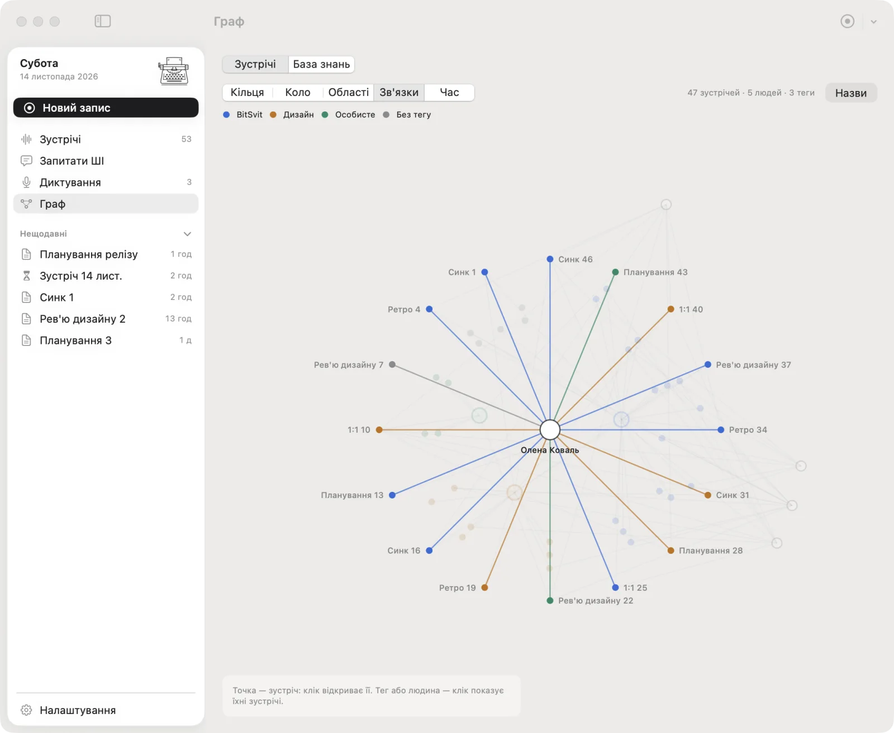

Pysar — an AI meeting memory that shows its sources.
A native macOS app I designed and built: it records meetings, transcribes them on the device, summarises them and answers questions about everything that was said — with a link to the exact moment behind every claim. AI agents can read the same data through an MCP server and a command-line tool.

The problem: what was decided, and who said it?
I spend a large part of the week in meetings. Decisions and promises are made there and then lost: nobody rereads a recording, and notes written from memory are wrong in the details that matter.
I wanted a tool that answers a plain question — “what did we decide about the release?” — and lets me check the answer in seconds. It also had to keep recordings of work meetings on my own machine. The tool I used before did not fit the way I work, so I built my own.
What it does.
- Records the meetingMicrophone and system sound as separate tracks. It notices a call in Teams, Zoom, Slack, Webex, FaceTime, Discord or a browser and offers to record it.
- Transcribes on the deviceSpeech recognition and speaker separation run locally. No audio leaves the Mac.
- SummarisesWith a local model or with Claude — the user chooses. Every point in a summary links to its moment in the recording.
- Answers questions across all meetings“Ask AI” searches titles, summaries and transcripts, gives the model the most relevant meetings and returns an answer with sources.
- Shows the shape of the workA graph of meetings, people and tags — and a second graph that reads a folder of Markdown notes and draws the links between them.
- Works for agents tooAn MCP server and a CLI give AI agents read-only access: list meetings, search, open a transcript or a summary.
Key design decision: an answer you can check.
An AI answer about a meeting is only useful if the reader can trust it. So the interface never shows a bare claim.
- Every claim carries its sourceThe meeting name and the timestamp are links. One click opens the recording at that second.
- Gaps are shown, not hiddenIf a task has no owner in the transcript, the answer says so under its own heading instead of guessing a name.
- The model is namedEach answer shows which model produced it and reminds the reader to check important things in the meeting itself.
- The limit is statedSearch is by words today, not by meaning. I chose to say that in the product notes and plan semantic search next, not to pretend it is there.

Meetings and a knowledge base as a graph.
The graph is drawn natively, without a library. Positions come from a formula — angle from the group, radius from the type of node — so the picture is stable and readable instead of floating.


How I built it.
- Design first, then codeI wrote user stories with acceptance criteria and a glossary of interface terms before the first screen. The backlog grew to about 90 stories.
- AI as a pair, not as an authorI built it with Claude Code. I set the design rules, review every screen in snapshots and decide what ships.
- Tests from the start158 unit tests and a self-test of 377 checks run on a separate test store with seed data — the same data as in the screenshots here.
- Direct LLM integrationClaude is called through its HTTP API without an SDK, with the key in the system keychain. Local models run through llama.cpp.
- A real distributionA signed installer and launch at login. From the first commit to the version shown here took about two weeks.
The same thinking outside the app.
Pysar is one part of how I work with knowledge and AI every day.
- A local RAG over product documentationI built a retrieval tool over a Confluence space: local multilingual embeddings for search, a Claude model for the answer, and a link to the source page in every reply.
- An LLM-maintained wikiMy notes, meetings and project decisions live in a Markdown knowledge base that an agent keeps up to date every night and reads through an index, not through guesswork.
- MCP in daily workI connect agents to Figma, Jira, Confluence and my own tools through MCP, and I write the skills that tell them how to use each one.
Where it stands — and what it is not.
Pysar is a personal product in daily use, not a company-wide rollout. It detects calls in Teams and Slack but is not a bot inside them, and its search is keyword-based for now. I have shown it to colleagues in a live demo; the next steps are semantic search and a wider test.
What it taught me about AI products.
- Trust is an interface problemThe model was good enough early. What made the answers usable was showing where each one came from.
- “I don’t know” needs a designAn honest gap, shown clearly, is worth more than a confident guess.
- Agents are usersThe CLI and the MCP server got the same care as the screens: clear names, read-only access, predictable output.
If you liked this, also see…
Found this through Upwork?
Then you already know where to reach me. Send the brief through your Upwork job post or an invite — I usually reply within a working day.